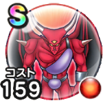

カースビエル
ドラクエ1＆2ReWALKこころ最大コスト+4スキルの斬撃・体技ダメージ+6%ギラ属性斬撃・体技ダメージ+6%ヒャド属性斬撃・体技ダメージ+6%ゾンビ系へのダメージ+5%物質系へのダメージ+5% / 7.0点
くわしい特徴
【ランク特殊効果】 こころ最大コスト+4スキルの斬撃・体技ダメージ+6%ギラ属性斬撃・体技ダメージ+6%ヒャド属性斬撃・体技ダメージ+6%ゾンビ系へのダメージ+5%物質系へのダメージ+5%

ドラクエ1＆2ReWALKこころ最大コスト+4スキルの斬撃・体技ダメージ+6%ギラ属性斬撃・体技ダメージ+6%ヒャド属性斬撃・体技ダメージ+6%ゾンビ系へのダメージ+5%物質系へのダメージ+5% / 7.0点
【ランク特殊効果】 こころ最大コスト+4スキルの斬撃・体技ダメージ+6%ギラ属性斬撃・体技ダメージ+6%ヒャド属性斬撃・体技ダメージ+6%ゾンビ系へのダメージ+5%物質系へのダメージ+5%